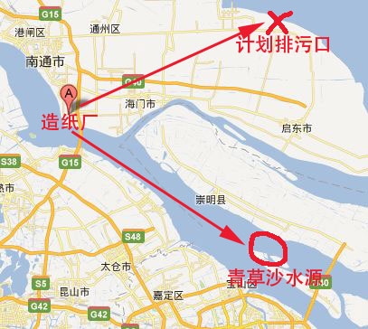
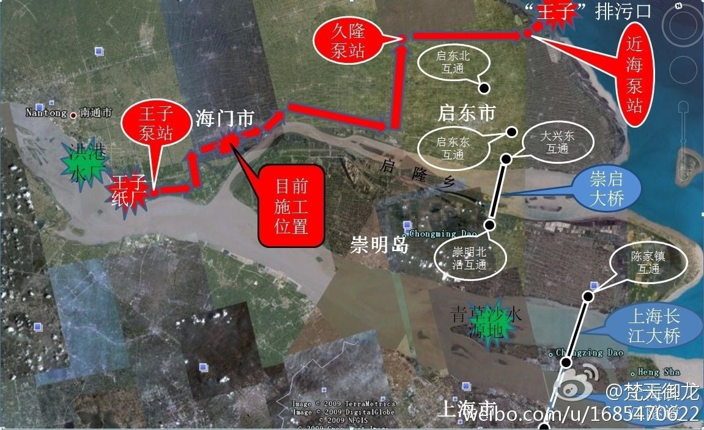
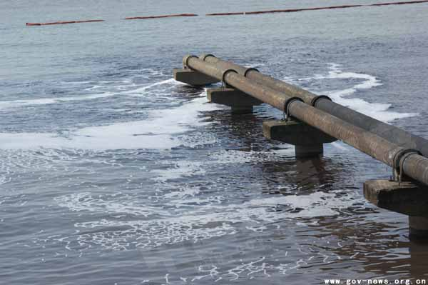
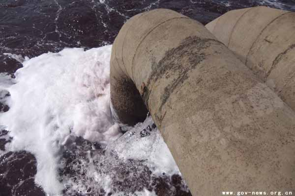
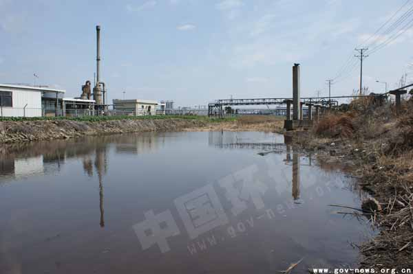

前天，江苏启东爆发大规模抗议活动，矛头直指当地的海水污染。某些网友留言，建议俺写篇相关的博文。初步打算在本周末发一篇启东抗议活动的汇总（链接在“这里”）。
今天这篇博文，主要是写给上海网友们看的。
顺便说一下：这已经俺第 N 次煽动不和谐事件。在此郑重声明：谢绝跨省追捕 :)
先来介绍一下启东事件的来龙去脉。
话说长江口有一个南通市，南通市有一家日本外资企业叫“王子造纸”。这家企业早在2010年就已经正式投产。据官方的说法，该企业每日污水量是15万吨，直接排入长江。
最近，南通想搞一个污水排放的环保工程，把原先排入长江的污水，引到启东的海域（启东靠海，属于南通的县级市）。该工程的环保依据是：海水对污染物的净化能力大于江河的净化能力。这个依据是否科学，俺就不发表评论了。俺想说的是：如果造纸厂排入长江的废水没有污染的话，那为何要劳师动众地造100多公里长的管道，把废水输出到启东海域？显然，这个排海工程恰恰说明造纸厂排入长江的废水是高污染的！
话说启东的吕四港号称中国的4大渔港。当地人靠海吃饭，当然不希望渔港被污染。于是就爆发了大规模的抗议活动。就在前天（7月28日），抗议群众还攻占了市政府大楼。
由于启东老百姓闹得太大，启东市政府迫于压力，已经宣布：永久性取消污水排海工程。
估计很多上海网友是抱着看热闹的心态去关注启东事件，殊不知此事跟上海的关系很密切。
污水排海的管道工程是取消了，启东老百姓赢得了阶段性胜利。但王子造纸厂并没有永久性停产。只要王子造纸不关闭，那每天15万吨的污水就继续排入长江。请看下面两张地图：


王子造纸厂位于南通开发区。整个开发区的排污口，位于青草沙水库上游。而上海自来水的相当大一部分，来自于青草沙水库。这就是启东事件对上海的影响！另外，每天15万吨的污水量是官方的数字，真实数字是偏高还是偏低，用膝盖都能想明白。
下面分享几张南通开发区污染长江的照片：

（污水入江的照片）

（污水入江的照片）

（开发区内部的污水沟）
上述照片出自“这里”。在那篇文章中还提到：
俗话说，会叫的孩子有奶吃。在当今天朝，到处都爆发环保事件。只有那些敢于上街、敢于闹事的民众，才能争取到官府的让步，才能保一方平安。
举个例子：
想当年（2007年），厦门市政府要在当地兴建PX工厂（对二甲苯工厂），由于厦门市民闹得太厉害，市政府怂了，放弃该项目。据说这个PX工程后来改建到漳州了。同样在福建省，漳州市民就不如厦门市民敢闹，只好默默承受PX的污染风险。
所以，如果上海老百姓不敢闹，不会闹，那你们就只好忍受被污染的水源。不光你自己喝污水，你的小孩也要喝污水。喝污水倒也算了，万一若干年之后，身体某个部位出点啥毛病，你还得负担天价的医疗费用；生点病也就算了，万一水污染影响到你的小孩，那就不只是一代人的后患了。
当然啦，有些高帅富网友，平日只喝依云矿泉水，他们大概不在乎青草沙水库被污染；某些政府官员（及其直系亲属），能够享受特供，或许也不在乎水源被污染。可惜的是：高帅富只有一小撮，享受特供的人也很少。大部分上海民众的日常饮食，离不开青草沙水库提供的水源。
你自己是不是高帅富，能不能享受特供，你自个儿心知肚明吧？
顺便说一下，俺又写了一篇博文《谈谈环保问题的根源和解决之道》。看完之后，你大概会明白，为啥天朝遍地都是环保灾难。为啥上街抗议是咱屁民最直接有效的应对措施。
咱们屁民要表达抗议，其实很简单。只要周末跑到市中心或市政府门口去散步，即可。"散步"一词，就是当年厦门老百姓发明滴。
散步的好处在于完全合法——天朝没有哪条法律禁止老百姓去市中心走一圈。另外，跟示威游行相比，散步不需要向官府申请。
最好是选在周末。因为周末不用上班，可以鼓动更多的人出来散步。启东的抗议活动就是选在前天星期六。如果你想在上海散步，下一个周末（8月4日 8月5日）是理想的时间。咱要趁着启东那边正热闹，鼓动尽可能多的人去散步，也算是为朝廷的"维稳大业"锦上添花 :)
对上海而言，最理想的散步地点莫过于人民广场了——地处市中心，还有市政府，交通也很方便哦。去年的茉莉花集会，上海的集会地点就是在人民广场。
如何才能确保散步的安全性捏？其实很简单，只要你在散步的时候遵循："不喊口号、不打标语横幅、不谈及敏感话题、不发送敏感短信、不拍照"，那朝廷的走狗没办法抓你。因为散步地点是闹市区，人很多，走狗们无法分辨哪些人是故意来散步的，哪些人是无意间路过此地的。当年俺呼吁茉莉花集会的时候，还专门写过一篇博文（链接在“这里”），介绍散步的注意事项，大伙儿可以参考一下。
对于参加散步的人而言，你的主要成本就是：花一些时间，花几块钱买公交票（地铁票），仅此而已。
关键是人多！只要有几千人跑到市中心或市政府门口去散步，就足以对市领导造成很大的压力。如果有媒体跟进报道，或者配合网上微博的直播，那效果就更好了。
南通的启东，一个小小的县级市（总人口才112万），有几万人自发上街抗议，甚至攻占市政府。堂堂一个大上海（总人口2300万），如果连几千人的抗议队伍也凑不出来的话，俺只好说句难听的——活该一辈子喝污水。
如果你是上海的网友、或者你有朋友生活在上海，你可以转发此文，让更多的人知道此事（有 Google+ 的网友，可以点“这里”进行转发）。知道的人越多，上街抗议的规模就越大，就越可能扭转局面。希望上海人民以启东人民为榜样，为自己和后代争取更好的生存环境！
官府总是挑软柿子捏。哪个地方的民众不敢吱声，那里的官府就敢乱来。只有当每一个地方的民众都敢于抗议环保灾难，官府迫不得已，才会真的花力气去落实环保工程。
俺博客上，和本文相关的帖子（需翻墙）：
《每周转载：关于启东的环保抗议（照片多张、视频若干）》
《谈谈环保问题的根源和解决之道》
《“片面强调 PX 低毒”属于偷换概念——茂名 PX 抗议活动随想》
《每周转载：广东茂名反 PX 环保抗议活动（照片及网友评论）》
《每周转载：关于什邡的环保抗议（网文3篇、照片若干、视频若干）》
《回顾2011年重大群体事件（多图）》
今天这篇博文，主要是写给上海网友们看的。
顺便说一下：这已经俺第 N 次煽动不和谐事件。在此郑重声明：谢绝跨省追捕 :)
★启东事件的缘由
先来介绍一下启东事件的来龙去脉。
话说长江口有一个南通市，南通市有一家日本外资企业叫“王子造纸”。这家企业早在2010年就已经正式投产。据官方的说法，该企业每日污水量是15万吨，直接排入长江。
最近，南通想搞一个污水排放的环保工程，把原先排入长江的污水，引到启东的海域（启东靠海，属于南通的县级市）。该工程的环保依据是：海水对污染物的净化能力大于江河的净化能力。这个依据是否科学，俺就不发表评论了。俺想说的是：如果造纸厂排入长江的废水没有污染的话，那为何要劳师动众地造100多公里长的管道，把废水输出到启东海域？显然，这个排海工程恰恰说明造纸厂排入长江的废水是高污染的！
话说启东的吕四港号称中国的4大渔港。当地人靠海吃饭，当然不希望渔港被污染。于是就爆发了大规模的抗议活动。就在前天（7月28日），抗议群众还攻占了市政府大楼。
由于启东老百姓闹得太大，启东市政府迫于压力，已经宣布：永久性取消污水排海工程。
★启东事件跟上海的关系
估计很多上海网友是抱着看热闹的心态去关注启东事件，殊不知此事跟上海的关系很密切。
污水排海的管道工程是取消了，启东老百姓赢得了阶段性胜利。但王子造纸厂并没有永久性停产。只要王子造纸不关闭，那每天15万吨的污水就继续排入长江。请看下面两张地图：
王子造纸厂位于南通开发区。整个开发区的排污口，位于青草沙水库上游。而上海自来水的相当大一部分，来自于青草沙水库。这就是启东事件对上海的影响！另外，每天15万吨的污水量是官方的数字，真实数字是偏高还是偏低，用膝盖都能想明白。
下面分享几张南通开发区污染长江的照片：
（污水入江的照片）
（污水入江的照片）
（开发区内部的污水沟）
上述照片出自“这里”。在那篇文章中还提到：
南通开发区污水处理厂目前有3个，一个是1992年建成使用的，污水处理能力达2.5万吨；2003年二期污水处理厂投运，处理能力为3万吨，2007年污水处理厂三期开始建设，处理能力4.8万吨。南通市环保局开发区分局副局长尹冠云认为，每天10.3万吨的污水处理能力，足以满足开发区数百家企业的治污需求。也就是说，王子造纸仅仅是南通开发区的污染源之一。整个南通开发区的污水排放量更加巨大。
但知情人告诉本刊工作人员，南通开发区数百家企业每天排放的污水根本不止10万吨。开发区两条排污管道之所以排出“红水”，就是因为污水处理厂处理能力远远不够，对数百家企业排出的工业废水只能进行“简单”处理后排入长江，而夜晚甚至不处理就直接偷排江中。
★为啥要抗议？
俗话说，会叫的孩子有奶吃。在当今天朝，到处都爆发环保事件。只有那些敢于上街、敢于闹事的民众，才能争取到官府的让步，才能保一方平安。
举个例子：
想当年（2007年），厦门市政府要在当地兴建PX工厂（对二甲苯工厂），由于厦门市民闹得太厉害，市政府怂了，放弃该项目。据说这个PX工程后来改建到漳州了。同样在福建省，漳州市民就不如厦门市民敢闹，只好默默承受PX的污染风险。
所以，如果上海老百姓不敢闹，不会闹，那你们就只好忍受被污染的水源。不光你自己喝污水，你的小孩也要喝污水。喝污水倒也算了，万一若干年之后，身体某个部位出点啥毛病，你还得负担天价的医疗费用；生点病也就算了，万一水污染影响到你的小孩，那就不只是一代人的后患了。
当然啦，有些高帅富网友，平日只喝依云矿泉水，他们大概不在乎青草沙水库被污染；某些政府官员（及其直系亲属），能够享受特供，或许也不在乎水源被污染。可惜的是：高帅富只有一小撮，享受特供的人也很少。大部分上海民众的日常饮食，离不开青草沙水库提供的水源。
你自己是不是高帅富，能不能享受特供，你自个儿心知肚明吧？
顺便说一下，俺又写了一篇博文《谈谈环保问题的根源和解决之道》。看完之后，你大概会明白，为啥天朝遍地都是环保灾难。为啥上街抗议是咱屁民最直接有效的应对措施。
★如何抗议？
◇抗议的形式？
咱们屁民要表达抗议，其实很简单。只要周末跑到市中心或市政府门口去散步，即可。"散步"一词，就是当年厦门老百姓发明滴。
散步的好处在于完全合法——天朝没有哪条法律禁止老百姓去市中心走一圈。另外，跟示威游行相比，散步不需要向官府申请。
◇抗议的时间？
最好是选在周末。因为周末不用上班，可以鼓动更多的人出来散步。启东的抗议活动就是选在前天星期六。如果你想在上海散步，下一个周末（8月4日 8月5日）是理想的时间。咱要趁着启东那边正热闹，鼓动尽可能多的人去散步，也算是为朝廷的"维稳大业"锦上添花 :)
◇抗议的地点？
对上海而言，最理想的散步地点莫过于人民广场了——地处市中心，还有市政府，交通也很方便哦。去年的茉莉花集会，上海的集会地点就是在人民广场。
◇如何降低风险？
如何才能确保散步的安全性捏？其实很简单，只要你在散步的时候遵循："不喊口号、不打标语横幅、不谈及敏感话题、不发送敏感短信、不拍照"，那朝廷的走狗没办法抓你。因为散步地点是闹市区，人很多，走狗们无法分辨哪些人是故意来散步的，哪些人是无意间路过此地的。当年俺呼吁茉莉花集会的时候，还专门写过一篇博文（链接在“这里”），介绍散步的注意事项，大伙儿可以参考一下。
对于参加散步的人而言，你的主要成本就是：花一些时间，花几块钱买公交票（地铁票），仅此而已。
◇如何让抗议有效果？
关键是人多！只要有几千人跑到市中心或市政府门口去散步，就足以对市领导造成很大的压力。如果有媒体跟进报道，或者配合网上微博的直播，那效果就更好了。
南通的启东，一个小小的县级市（总人口才112万），有几万人自发上街抗议，甚至攻占市政府。堂堂一个大上海（总人口2300万），如果连几千人的抗议队伍也凑不出来的话，俺只好说句难听的——活该一辈子喝污水。
★总结
如果你是上海的网友、或者你有朋友生活在上海，你可以转发此文，让更多的人知道此事（有 Google+ 的网友，可以点“这里”进行转发）。知道的人越多，上街抗议的规模就越大，就越可能扭转局面。希望上海人民以启东人民为榜样，为自己和后代争取更好的生存环境！
官府总是挑软柿子捏。哪个地方的民众不敢吱声，那里的官府就敢乱来。只有当每一个地方的民众都敢于抗议环保灾难，官府迫不得已，才会真的花力气去落实环保工程。
俺博客上，和本文相关的帖子（需翻墙）：
《每周转载：关于启东的环保抗议（照片多张、视频若干）》
《谈谈环保问题的根源和解决之道》
《“片面强调 PX 低毒”属于偷换概念——茂名 PX 抗议活动随想》
《每周转载：广东茂名反 PX 环保抗议活动（照片及网友评论）》
《每周转载：关于什邡的环保抗议（网文3篇、照片若干、视频若干）》
《回顾2011年重大群体事件（多图）》
版权声明
本博客所有的原创文章，作者皆保留版权。转载必须包含本声明，保持本文完整，并以超链接形式注明作者编程随想和本文原始地址：
https://program-think.blogspot.com/2012/07/qidong-and-shanghai.html
本博客所有的原创文章，作者皆保留版权。转载必须包含本声明，保持本文完整，并以超链接形式注明作者编程随想和本文原始地址：
https://program-think.blogspot.com/2012/07/qidong-and-shanghai.html